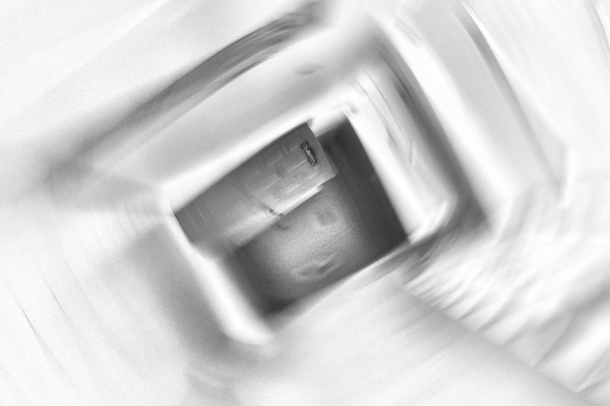

Inner World of Distracted Soul
Telegram-channel for observations and contemplations. Entries are usually published a couple of times a month; more enduring entities are transferred to the website..


Telegram-channel for observations and contemplations. Entries are usually published a couple of times a month; more enduring entities are transferred to the website..
